AI繪圖 Stable Diffusion
Stable Diffusion是由慕尼黑大學的CompVis研究團體開發的深度學習模型，可以藉由輸入文字或圖像生成圖像。
基本設定
文生圖
#sdtxt2img:<正向提問>
(optional)negative prompt:<負向提問>
(optional)<其他參數>
文生圖的指令是"#sdtxt2img:"後面接正向提問的描述(prompt)~
它可以是一段文字描述，也可以使用修饰词(Tag)。
然後是換行後接"negative prompt:"與輸入負向提問的修飾詞,用來告訴AI不想出現的關鍵詞彙。
最後是換行後接其他參數，不同參數用 "<空格>," 分開。
其他參數
可以不設定，就會用預設的參數。目前有效的參數如下:
- model
使用的AI模型
- model_hash
AI模型的雜湊值，有時AI模型檔名一樣但內容有變動,用hash值可以確保使用的模型內容是否相同。
- seed
生成圖片的亂數種子，用-1則每次隨機產生不同亂數種子就會生成不同的圖片唷。
- steps
(建議設定為10~50) 生成圖像所需的叠代步數。每增加一步叠代，都會使AI模型有更多的機會去比對提示和當前結果並進行調整。 更高的叠代步數需要更多的計算時間。但過高步數並不一定意味著更好的結果。 叠代步數低會降低生成圖像的質量。 通常AI模型的製作人會提供合適的steps參數範圍。
- sampler
AI模型會根據採樣器(sample)與設定的叠代步數(steps)持續更新影像，不同的採樣器會有不同的效果。 可以參考技術文章 有做深入的比較與探討。
- cfg_scale
提示詞相關性。數值高低會影像AI模型產生影像時參考正向與反向描述的程度。
越高，產生的圖片與提示詞有越高的相識度。
越低，產生的圖片與提示詞說明會較不相似。
- size
生成的影像尺寸，<寬度>x<高度>，受限於顯示卡的記憶體，目前最大為768x768。
- batch_size
每次生成的數量，受限於linebot回傳只能回5筆訊息，由於需留1筆訊息作為文字說明，目前只能設定最多到4張。
範例1 使用一段文字描述
#sdtxt2img:a horrible dog is running in the playground
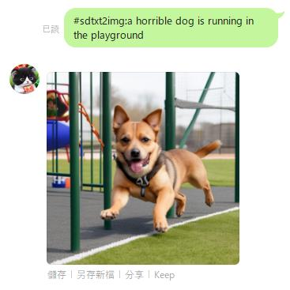
範例2 使用修饰词
#sdtxt2img:white background, cute cartoon baby rabbit, full body, steampunk, rocketman, goggles over head, hairy, jacket, realistic, rabbit teeth, happy
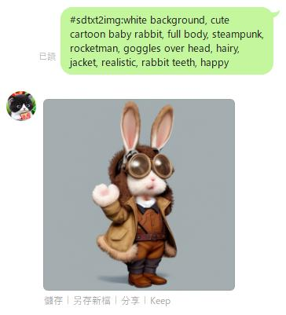
範例3 使用修饰词與負向修飾詞
請在修饰词與負向修飾詞之間的文字要換行。
#sdtxt2img:white background, cute cartoon baby rabbit, full body, steampunk, rocketman, goggles over head, hairy, jacket, realistic, rabbit teeth, happy
Negative prompt:wear glasses
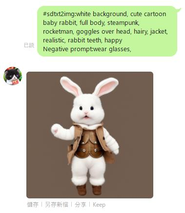
範例4 使用修饰词、負向修飾詞與其他參數
請在修饰词與負向修飾詞之間、負向修飾詞與其他參數之間的文字要換行。
在前幾次的範例中都沒有設定 seed 的參數，預設會是-1，就會隨機產生一個變數使得相同修飾詞也會得到不同圖片。
而這次在其他參數中有將 'Seed' 這個參數設定為固定的數值，所以用相同的參數都會生成同樣的圖片。
#sdtxt2img:white background, cute cartoon baby rabbit, full body, steampunk, rocketman, goggles over head, hairy, jacket, realistic, rabbit teeth, happy
Negative prompt:wear glasses
Size: 512x768, Seed: 1791574510, Model: chilloutmix_NiPrunedFp32Fix, Steps: 26, Sampler: DPM++ SDE Karras, CFG scale: 7, Model hash: fc2511737a'
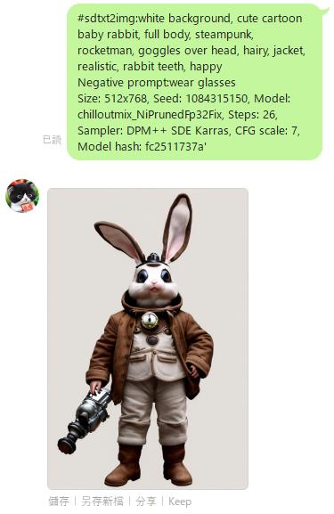
圖生圖
準備中 ....
圖片資訊
#sdinfo
用這個指令可以找出上一次產生的圖的修饰词和其他設定歐。當Seed設定為-1，也就是隨機生成圖片時 如果生成喜歡的圖可以用這個指令取得這次隨機Seed實際的數值。之後就可以固定Seed數值做其他參數的微調唷。
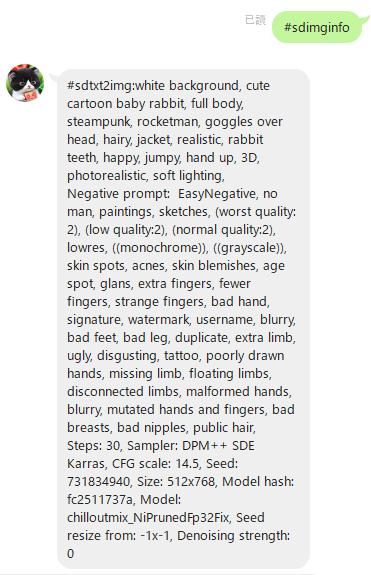
圖片刪除
#sddelete
用這個指令可以刪除上一次產生的圖，在line群未讀的人就無法再看到那張圖片囉。
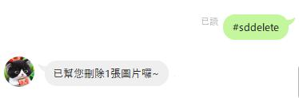
AI畫廊
#sdgallery
叫出網頁連結，裡面有圖片與修饰词可以一鍵複製，再回到line群貼上就可以做出大至相同的圖片唷。
叫出連結
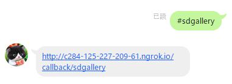
點進去就會顯示縮圖的圖片畫廊，找喜歡的點進去
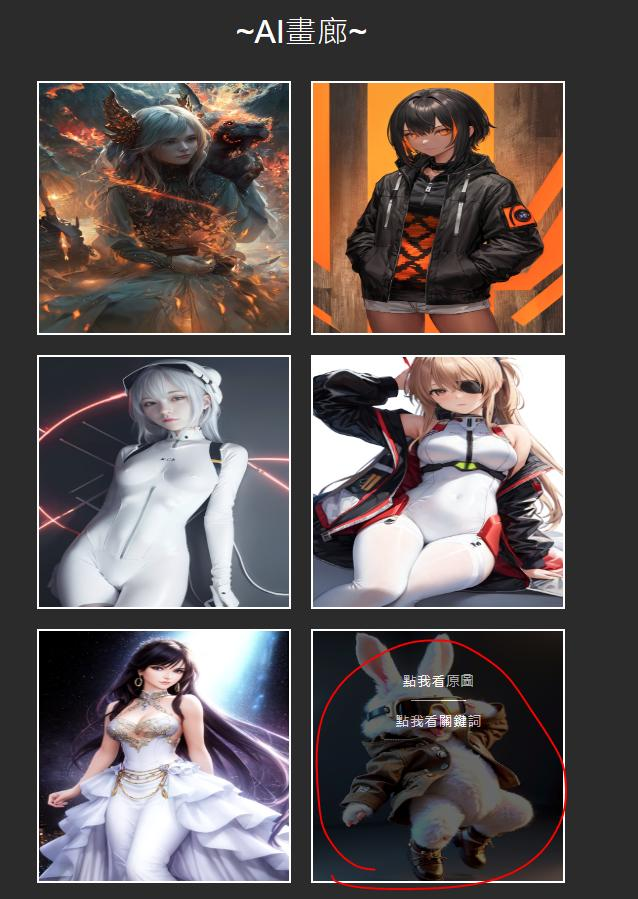
就會顯示原始大小的圖片，點"複製Prompt"就會將修饰词保存到剪貼板
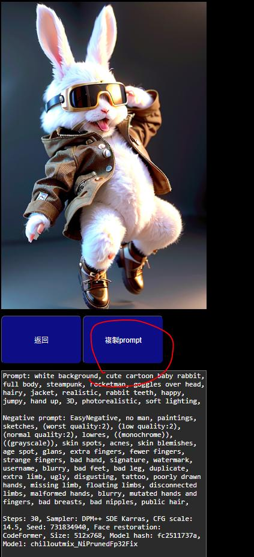
再回到line，在對話框直接貼上就可以送出囉
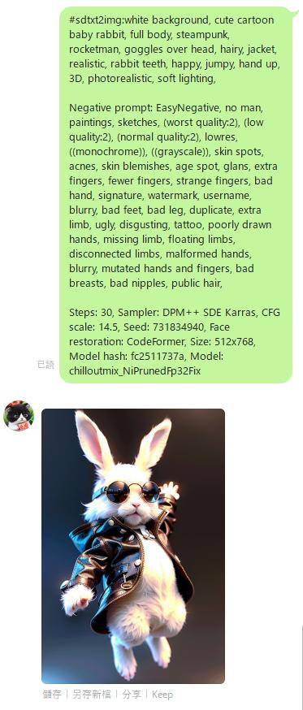
查詢AI模型名稱
#sdmodels
這個功能可以列出目前有安裝的模型名稱
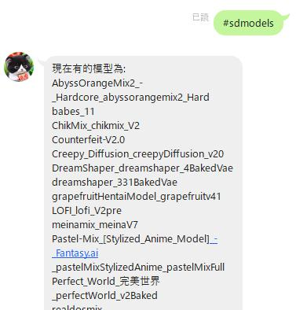
進階設定
AI模型
Sampler設定
LoRA設定
Controlnet設定
出處
CompVis Github
網頁版 Github